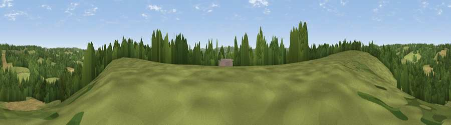

Viewpoint near Stonegate
#39381 in England · top 66% of its area beats it · near StonegateThe view, rendered

A 360° render of this exact spot computed from the terrain model, tree cover and land cover — summer colours, afternoon light, calibrated against photographs of famous viewpoints. Real trees, hedges and buildings will differ in detail.
The panorama
Grey silhouette: terrain skyline in each direction (720 bearings, Earth curvature and refraction included). Dashed green: skyline with trees (+15 m) and buildings (+8 m) as obstacles. Blue strip: how far the ground is visible on each bearing.
Where the view opens
Wedge length = distance to the farthest visible ground on that bearing (vegetation-aware). Rings at 10, 25 and 50 km.
What fills the view
49% grassland · 39% woodland · 12% cropland ·
Angular shares of the visible panorama (visual magnitude), not map area. Landscape diversity 0.44 (0–1 Shannon).
Key numbers
More beautiful places nearby
The staircase of upgrades: each row has a higher view potential than everything closer. Driving times are estimates from straight-line distance, calibrated against real road routing — check an actual route before setting out.
| Place | Direction | Drive | Score |
|---|---|---|---|
| Viewpoint near Stonegate | WNW · 2 km | ~6 min | 39.9 |
| Viewpoint near Flimwell | ENE · 4 km | ~10 min | 40.2 |
| Viewpoint near Woods Green | NW · 5 km | ~11 min | 42.9 |
| Best Beech Hill | WNW · 6 km | ~13 min | 55.6 |
| Brightling Obelisk [Brightling Down] | S · 7 km | ~15 min | 69.1 |
| Viewpoint near Three Oaks | SE · 22 km | ~37 min | 69.3 |
| Viewpoint near Guestling Green | SE · 24 km | ~40 min | 72.2 |
| Viewpoint near Fairlight | SE · 25 km | ~40 min | 74.7 |
51.03257, 0.38780 · source: screening · position refined by local search. Computed location — check access rights before visiting.